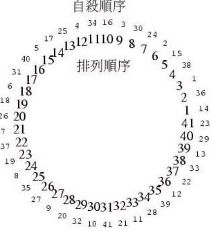

約瑟夫問題
December 5, 2021據說著名猶太歷史／數學家約瑟夫（Josephus）有過以下的故事：在羅馬人佔領喬塔帕特後，40 個猶太士兵與約瑟夫躲到一個洞中，眼見脫逃無望，一群人決定集體自殺，然而私下約瑟夫與某個傢伙並不贊成，於是約瑟夫建議自殺方式，41 個人排成圓圈，由第 1 個人開始報數，每報數到 3 的人就必須自殺，然後由下一個重新報數，直到所有人都自殺身亡為止。約瑟夫與不想自殺的那個人分別排在第 16 個與第 31 個位置，於是逃過了死亡。
解法思路
只要畫兩個圓圈就可以讓約瑟夫與不想死的傢伙免於死亡，這兩個圓圈內圈是排列順序，而外圈是自殺順序，如下圖所示：

- 使用程式求解的話，將陣列當作環狀來處理就可以了，在陣列中由計數 1 開始，每找到三個無資料區就填入一個計數，直而計數達 41 為止，然後將陣列由索引 1 開始列出，就可以得知每個位置的自殺順序，這就是約瑟夫排列，41 個人而報數 3 的約琴夫排列如下所示：
-
14 36 1 38 15 2 24 30 3 16 34 4 25 17 5 40 31 6 18 26 7 37 19 8 35 27 9 20 32 10 41 21 11 28 39 12 22 33 13 29 23
由上可知，最後一個自殺的是在第 31 個位置，而倒數第二自殺的要排在第 16 個位置。
如果從另一角度來看，每次有人自殺後，剩下的人重新編號，那問題就可以分解為數個子問題。
- 如果使用動態規畫，有個遞迴推導公式可在維基百科的〈Josephus problem〉條目找到：
- g(1, k) = 0
- g(n, k) = (g(n - 1, k) + k) % n
其中 k 表示報數 k 的人就自殺，g(n, k) 就是 n 人組成的圓最後存活者編號，編號是從 0 開始，由於 1 人時該人就是存活者，所以 g(1, k) 為 0。簡單來說，如果可以求得 n - 1 的圓時最後存活者編號 x，就可以用來求得 n 的圓時最後存活者編號 (x + k) % n（如果要得到 1 開始的編號，就對結果加一即可）。
如果使用鏈結串列，問題會更簡單，A 串列中是 1 到 n 的編號，逐一移出A串列中的編號至 B 串列，最後 A 串列為空，B 串列就是自殺編號順序，1 到 n 編號所在的索引加一就是約瑟夫排列。
程式實作
#include <stdio.h>
#include <stdlib.h>
#define LEN 41
#define STEP 3
void josephus(int*, int, int);
int next(int*, int, int, int);
int winner(int, int);
int main(void) {
int man[LEN] = {0};
josephus(man, LEN, STEP);
printf("約琴夫排列：");
int i;
for(i = 0; i < LEN; i++) {
printf("%d ", man[i]);
}
printf("\nWinner: %d", winner(LEN, STEP));
return 0;
}
void josephus(int* man, int len, int k) {
int i, n;
for(i = 1, n = -1; i <= len; i++) {
n = next(man, len, k, n);
man[n] = i;
}
}
int next(int* man, int len, int k, int n) {
int count = 0;
while(count < k) {
n = (n + 1) % len;
if(man[n] == 0) { count++; }
}
return n;
}
int winner(int len, int k) {
int g, n;
for(g = 0, n = 1; n <= len; n++) {
g = (g + k) % n;
}
return g + 1;
}
import java.util.*;
import static java.lang.System.out;
public class Josephus {
public static List<Integer> awayOrder(int len, int k) {
List<Integer> numbers = new LinkedList<>();
for(int i = 1; i <= len; i++) { numbers.add(i); }
List<Integer> awayOrder = new ArrayList<>(len);
for(int i = 2;;) {
awayOrder.add(numbers.remove(i));
if(numbers.isEmpty()) { break; }
i = (i + k - 1) % numbers.size();
}
return awayOrder;
}
public static List<Integer> josephus(List<Integer> awayOrder) {
List<Integer> josephus = new ArrayList<>(awayOrder.size());
for(int i = 1; i <= awayOrder.size(); i++) {
josephus.add(awayOrder.indexOf(i) + 1);
}
return josephus;
}
public static List<Integer> josephus(int len, int k) {
return josephus(awayOrder(len, k));
}
public static void main(String[] args) {
List<Integer> awayOrder = awayOrder(41, 3);
out.print("自殺順序：");
for(Integer number : awayOrder) {
out.printf("%3d", number);
}
out.print("\n約瑟夫環：");
for(Integer number : josephus(awayOrder)) {
out.printf("%3d", number);
}
}
}
def remove(list, i):
return list[0:i] + list[i + 1:]
def awayOrder(l, k):
def suicide(numbers, awayOrder, i):
awayOrd = awayOrder + [numbers[i]]
nums = remove(numbers, i)
return awayOrd if len(nums) == 0 \
else suicide(nums, awayOrd, (i + k - 1) % len(nums))
return suicide([i for i in range(1, l + 1)], [], 2)
def josephus(awayOrder):
return [awayOrder.index(i) + 1 for i in range(1, len(awayOrder) + 1)]
awayOrd = awayOrder(41, 3)
print("自殺順序：" + str(awayOrd))
print("約瑟夫環：" + str(josephus(awayOrd)))
def awayOrder(len: Int, k: Int) = {
def suicide(numbers: List[Int],
awayOrder: List[Int], i: Int): List[Int] = {
val awayOrd = numbers(i) :: awayOrder
val nums = numbers.filterNot(numbers.indexOf(_) == i)
if(nums.isEmpty) awayOrd.reverse
else suicide(nums, awayOrd, (i + k - 1) % nums.size)
}
suicide((1 to len).toList, Nil, 2)
}
def josephus(awayOrder: List[Int]) = {
(for(i <- 1 to awayOrder.size) yield awayOrder.indexOf(i) + 1).toList
}
def josephus(len: Int, k: Int): List[Int] = josephus(awayOrder(len, k))
println("自殺順序：" + awayOrder(41, 3).toString.drop(4))
println("約瑟夫環：" + josephus(41, 3).toString.drop(4))
# encoding: UTF-8
def awayOrder(l, k)
suicide = ->(numbers, awayOrder, i) {
awayOrd = awayOrder + [numbers[i]]
nums = numbers.select {|e| numbers.find_index(e) != i }
nums.empty? ? awayOrd :
suicide.call(nums, awayOrd, (i + k - 1) % nums.size)
}
suicide.call((1..l).to_a, [], 2)
end
def josephus(awayOrder)
(1..awayOrder.size).map {|i| awayOrder.find_index(i) + 1}
end
awayOrd = awayOrder(41, 3)
puts("自殺順序：" + awayOrd.to_s)
puts("約瑟夫環：" + josephus(awayOrd).to_s)
function awayOrder(len, k) {
var numbers = [];
for(var i = 1; i <= len; i++) { numbers.push(i); }
var awayOrder = [];
for(var i = 2;;) {
awayOrder.push(numbers.splice(i, 1)[0]);
if(numbers.length === 0) { break; }
i = (i + k - 1) % numbers.length;
}
return awayOrder;
}
function josephus(awayOrder) {
var jp = [];
for(var i = 1; i <= awayOrder.length; i++) {
jp.push(awayOrder.indexOf(i) + 1);
}
return jp;
}
var awayOrd = awayOrder(41, 3);
print('自殺順序：' + awayOrd);
print('約瑟夫環：' + josephus(awayOrd));
import Data.List
remove lt i = (take i lt) ++ (drop (i + 1) lt)
indexOf elem list = a
where (Just a) = elem `elemIndex` list
awayOrder l k = suicide [1..l] [] 2
where suicide numbers awayOrder i =
if length nums == 0 then reverse awayOrd
else suicide nums awayOrd ((i + k - 1) `mod` (length nums))
where awayOrd = (numbers !! i) : awayOrder
nums = remove numbers i
josephus awayOrder =
[(indexOf i awayOrder) + 1 | i <- [1..(length awayOrder)]]
main = do
putStrLn $ "Away order : " ++ show awayOrd
putStrLn $ "Josephus order: " ++ show (josephus awayOrd)
where awayOrd = awayOrder 41 3